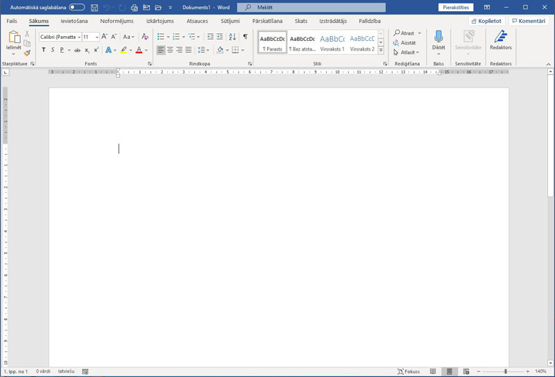
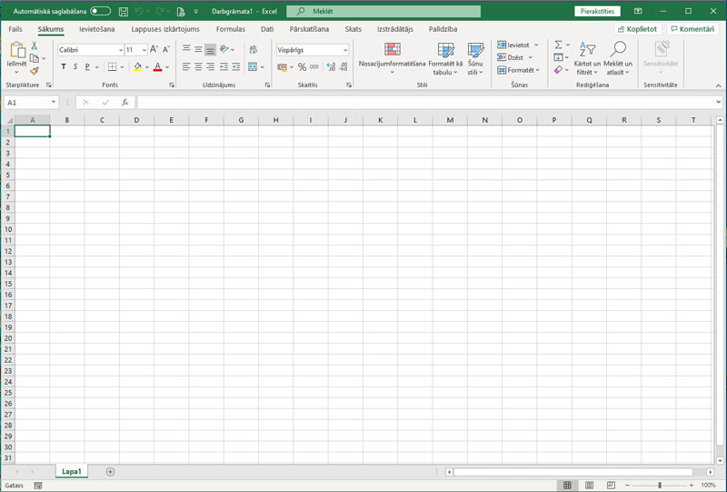
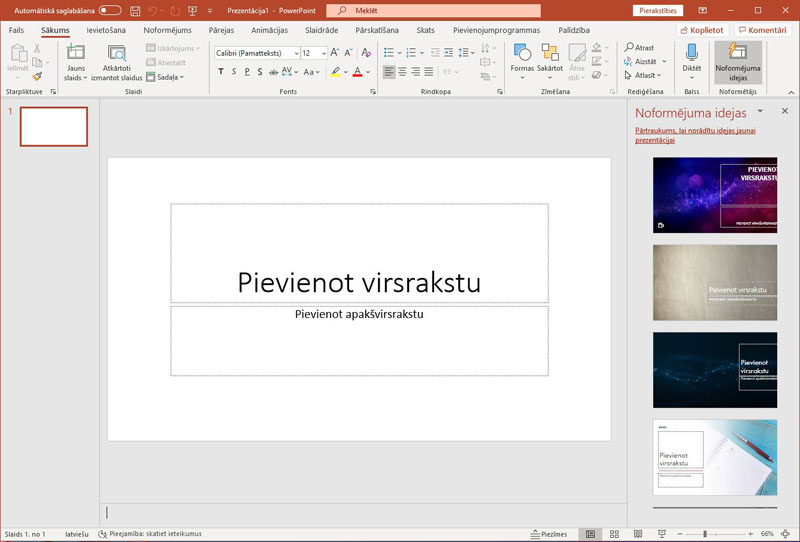

| Datu bāzes | Tekstapstrāde |
|---|---|
|  | |
| Izklājlapas | Prezentācijas |
|  |  |
Tīmekļa vietne izstrādāta, lai atvieglotu attālinātu mācību procesu skolēniem, kas kārtos centralizētos eksāmenus informātikā un apgūst Microsoft Office. Šeit noderīgu informāciju atradīs arī studenti, kas apgūst datu bāzu vadības sistēmas.